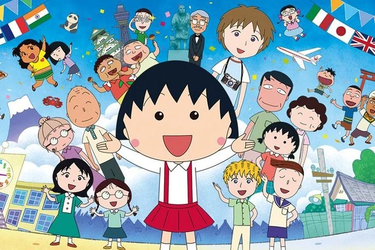
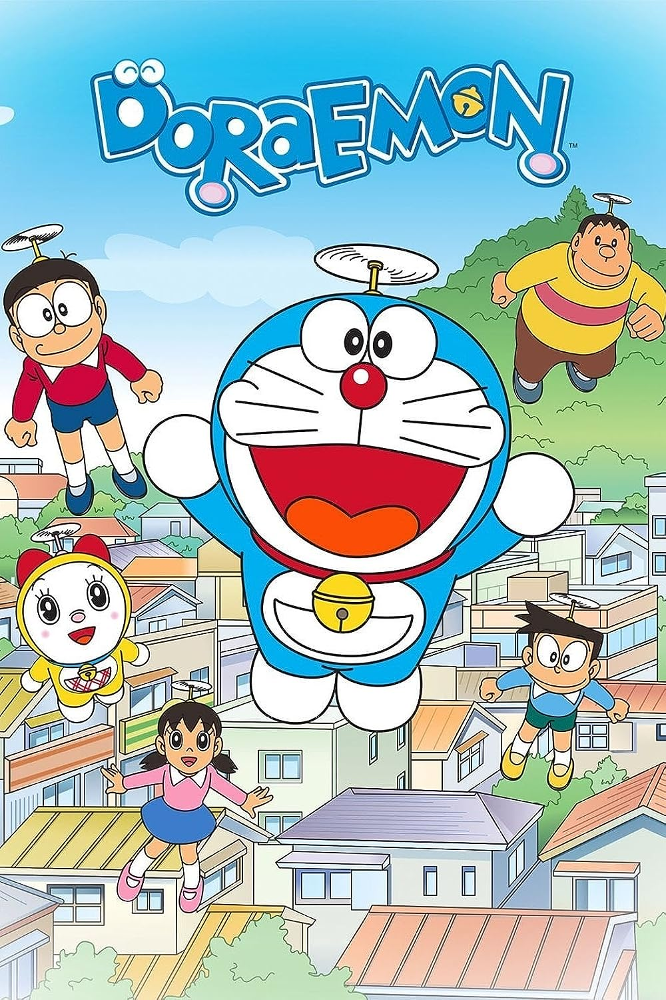

Trang chủ | Thiếu nhi | Comic | Anime
Chibi Maruko-chan (Tên tiếng Việt: Cô bé Maruko hoặc Nhóc Maruko) là một tựa phim hoạt hình được chuyển thể từ manga nổi tiếng của tác giả Sakura Momoko. Bộ truyện tranh dài kỳ Chibi Maruko-chan được Sakura Momoko lấy ý tưởng từ chính tuổi thơ của mình để sáng tác và đây cũng chính là tác phẩm làm nên tên tuổi của nữ họa sĩ này khi mới 21 tuổi. Nhóc Maruko lấy bối cảnh tại chính quê hương của tác giả - thành phố Shimizu thuộc tỉnh Shizuoka. Ngay sau khi ra mắt những tập đầu tiên trên Tạp chí Ribon, bộ truyện Chibi Maruko-chan đã ngay lập tức nhận được sự yêu thích của nhiều độc giả. Tác phẩm này sau đó đã được chuyển thể thành anime từ năm 1990 và cho đến nay Nhóc Maruko đã trở thành một trong những bộ phim hoạt hình dài tập nhất và được theo dõi nhiều nhất tại Nhật Bản. Nhóc Maruko là bộ phim hoạt hình có nội dung rất đơn giản và chủ yếu xoay quanh cuộc sống hàng ngày của cô bé Maruko, một học sinh tiểu học bên cạnh gia đình của mình. Trong truyện, nhóc Maruko - nhân vật chính của chúng ta là một cô bé ham chơi và luôn nghĩ ra những ý tưởng kỳ quặc để chọc phá mọi người. Gia đình của Maruko gồm có ông bà nội, ba mẹ và một người chị gái. Bộ phim hoạt hình Nhóc Maruko không thu hút khán giả ở những hình ảnh đẹp mắt hay kỹ xảo hoành tráng mà tạo ấn tượng trước hết bởi sự chân thật trong biểu cảm và tính cách của từng nhân vật. Chúng ta có ông bà nội của Maruko đúng kiểu là những người ông người bà luôn chăm lo cho cháu, mẹ của Maruko tuy hay cáu gắt nhưng rất mực thương con, Maruko tuy nghịch ngợm nhưng vẫn rất hồn nhiên và vô tư đúng như lứa tuổi…. Phiên bản Cô bé Maruko tiếng Việt đã được Webtoon mua bản quyền và đăng tải để nhiều khán giả tại Việt Nam có thể theo dõi trọn bộ hành trình đầy thú vị của cô nhóc Maruko tinh nghịch. Đây cũng là một bộ phim hoạt hình có nhiều bài học hay ho về cuộc sống để các bạn có thể xem cùng con và giúp bé có một nhân sinh quan đúng đắn về nhiều chuyện trong cuộc sống sau này. Còn chờ gì nữa, truy cập ngay POPS Kids để dõi theo hành trình đầy thú vị của cô nhóc Maruko nhé!.

Doraemon được mua bản quyền và được cập nhật phát sóng mới nhất trên ứng dụng giải trí POPS. Đây là bộ phim hoạt hình chuyển thể từ truyện tranh hấp dẫn nhất Nhật Bản: Doraemon của tác giả Fujiko Fujio sáng tác từ năm 1969. Bộ truyện kể về một chú mèo máy tên Doraemon đến từ thế kỉ 22 để giúp một cậu bé lớp 5 hậu đậu tên là Nobi Nobita. Sewashi (Nobito), cháu ba đời của Nobita gửi Doraemon về quá khứ nhằm giúp đỡ ông mình, qua đó cải thiện được hoàn cảnh của con cháu Nobita sau này. Các tập phim Doraemon thường xoay quanh những rắc rối hay xảy ra với cậu bé Nobita. Cốt truyện thường gặp nhất là Nobita trở về nhà khóc lóc với Doraemon vì những rắc rối mà cậu gặp phải ở trường học hoặc với bạn bè. Sau khi bị cậu van nài hoặc thúc giục, Doraemon sẽ lấy ra một bảo bối trong chiếc túi thần kỳ trước bụng để giúp Nobita giải quyết rắc rối của mình. Nhưng Nobita sẽ lại thường đi quá xa so với dự định ban đầu của Doraemon. Cậu thường lấy sự ưu việt của bảo bối để trêu ghẹo mọi người nên cuối cùng bị phản tác dụng, bị bảo bối gây phiền phức. Có đôi khi những người bạn của Nobita, thường là Suneo hoặc Jaian lại lấy trộm những bảo bối và sử dụng chúng không đúng mục đích. Kết thúc mỗi câu chuyện, những ai sử dụng sai mục đích bảo bối sẽ phải chịu hậu quả do mình gây ra, từ đó khán giả sẽ rút ra được bài học cho riêng mình. Doraemon là bộ phim hoạt hình thiếu nhi mang lại cho khán giả những tràng cười thoải mái, những tình huống vui nhộn cùng những bài học giáo dục đầy ý nghĩa. Phim được lồng tiếng với chất lượng hình ảnh sắc nét mang lại trải nghiệm xem phim tuyệt vời. Xem trọn bộ Doraemon full HD ngay tại Webtoon bạn nhé.
